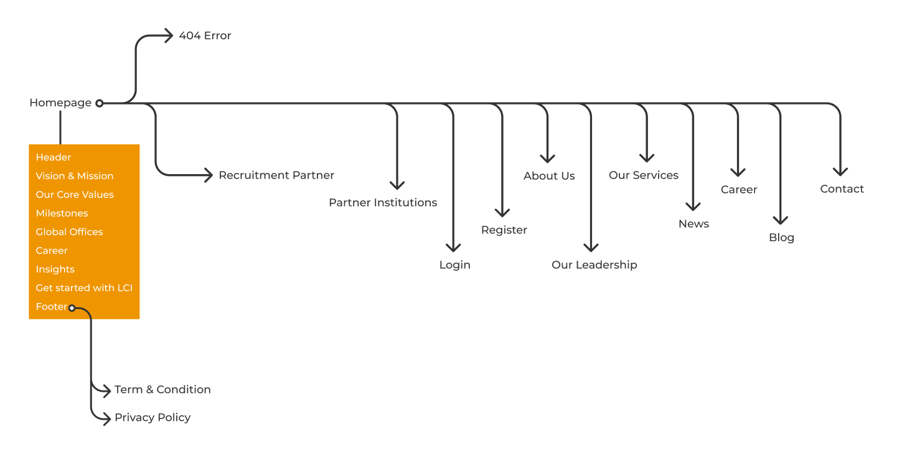

LCI Group Redesign
MAKE YOUR DREAMS COME TRUE.
This encapsulates the redesign process of LCI Group's website, aimed at enhancing its user experience and modernizing its design to better resonate with its audience.
Roles
I assumed the following roles designing this project:
- User Experience (UX) Designer
- Interaction (IxD) Designer
- User Interface (UI) Designer
- Visual Designer
- UI Tester
Deliverables
UX/UI Design:
- User journeys and task flows
- Low-fidelity wireframes
- High-fidelity mockups and prototypes
- Design system
Specifications
Duration: 22 weeks
Tools:
- Figma
- Adobe Illustrator
- VS Code
- Browser (Chrome, Firefox, Edge, Safari)
Overview
LCI Group's current website lacked modern design elements, resulting in an outdated user experience. The redesign was aimed to address these issues by implementing a user-centric approach, intuitive navigation, and contemporary design principles.
Problems
- The existing website suffered from outdated design aesthetics and a lack of intuitive navigation.
- It also lacked in data capturing points.
Proposed Solution
- It involved a complete revamp of the UI/UX.
- I also introduced modern design elements, simplified navigation, and multi-responsive layouts to improve overall user experience
Research
Researched user preferences, behaviors, and competitor analysis revealed a strong demand for streamlined navigation, visually appealing interfaces, and comprehensive information architecture. Users sought an engaging experience that simplified their search for educational opportunities abroad.
Findings
- Users prioritize clear and concise information regarding overseas education programs. Visual appeal and ease of navigation were highlighted as significant factors influencing user engagement.
- Identified gaps in competitor websites such as cluttered interfaces, complex navigation, and outdated design elements. Noted the successful integration of chat support and personalized recommendations on some competitor platforms.
- Users tend to abandon websites with slow loading times or complex navigation. Mobile usage for accessing educational consultancy websites is on the rise, emphasizing the need for mobile-responsive design.
- Users seek comprehensive details about courses, admission procedures, and testimonials from previous students. Demonstrated a strong inclination towards easily accessible resources like blogs, FAQs, and downloadable guides.
- Analysis of user journeys revealed drop-offs at certain stages, indicating potential friction points for optimization. Conversion paths were clearer for users with streamlined navigation and prominent calls-to-action.
Structure
The redesigned website structure includes intuitive navigation, clear information architecture, streamlined content, and strategically placed calls-to-action to guide users effectively.
Visualizing User-Centric Experience
The design focuses on the end-user, ensuring a seamless journey through the website. Information is presented logically, catering to different users, and emphasizing ease of use.
Establishing Visual Design
By incorporating modern UI elements, vibrant colors, legible typography, and high-quality imagery, the design aims to captivate users' attention and create a visually engaging experience. Clear call-to-action buttons and intuitive navigation elements ensure a seamless and enjoyable experience.
Aligning the website's visual elements with LCI Group's brand identity, including color schemes, typography, and imagery, to ensure consistency across all touchpoints. Implementing contemporary design trends to modernize the look and feel of the website, utilizing clean layouts, sleek typography, and intuitive iconography. Adapting visual elements to ensure a seamless experience across various devices, optimizing layouts for desktops, tablets, and mobile phones. By establishing a strong visual design, the website aims to captivate users' attention, evoke trust in the brand, and provide a pleasant and memorable user experience that aligns with LCI Group's overarching goals and values.


User-Centered Design
The redesign prioritizes user needs by facilitating easy access to information, implementing responsive design for various devices, and integrating user feedback loops for continuous improvement.
Structuring content elements to establish a clear visual hierarchy, guiding users' attention towards essential information and calls-to-action. Utilizing high-resolution and relevant imagery that resonates with the audience, showcasing the diverse educational opportunities and campus experiences. Placing emphasis on visuals that align with user preferences, taking into account cultural diversity and regional aesthetics to create a relatable experience. Utilizing visuals not just for aesthetics but as a storytelling tool to communicate the values, mission, and success stories associated with LCI Group's consultancy services. Continuously testing and iterating visual design elements based on user feedback and analytics to ensure optimal user engagement and conversion rates.


Improved Usability
Through improved navigation, responsive design, and intuitive layout, the website offers enhanced usability. Clear paths to information and interactive elements contribute to a more engaging user experience.
- The redesign process was an amalgamation of research, user-centric design principles, and creative innovation.
- Introducing interactive elements like hover effects, subtle animations, or micro-interactions to enhance user engagement without compromising functionality.
- The resulting website not only addresses the initial design limitations but also sets a standard for user-friendly interfaces in the education consultancy domain.